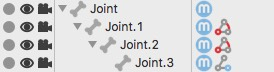

|
IK Constraint TagThe IK Constraint Tag helps to get a more predictable behavior of the IK solver. Especially the 3D solver, since the angle limits constraint the set of possible solutions of the IK solver. It also prevents IK chains from making unnatural movements like over bending of elbow joints for example. So it is always recommended to set up the IK Constraints for IK chains which use the 3D solver of the IK Handle Tag. It might make some extra work to set up the IK chain but it will pay back when you start animating or posing your character.  Properties
|